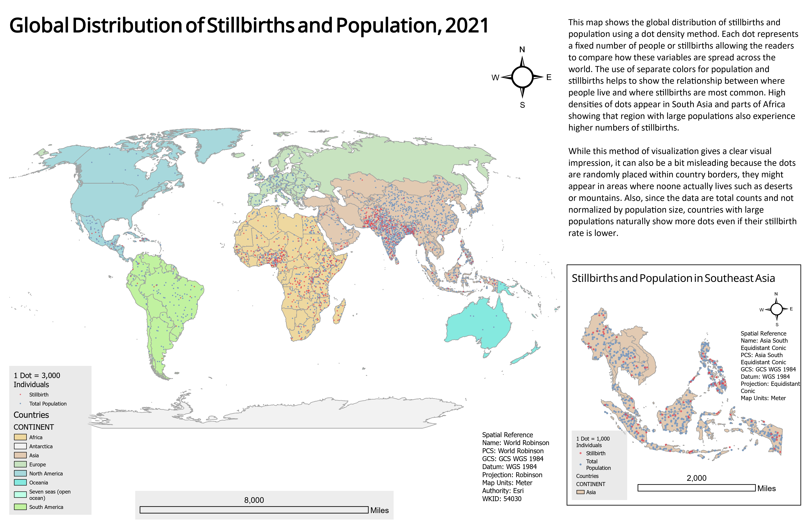
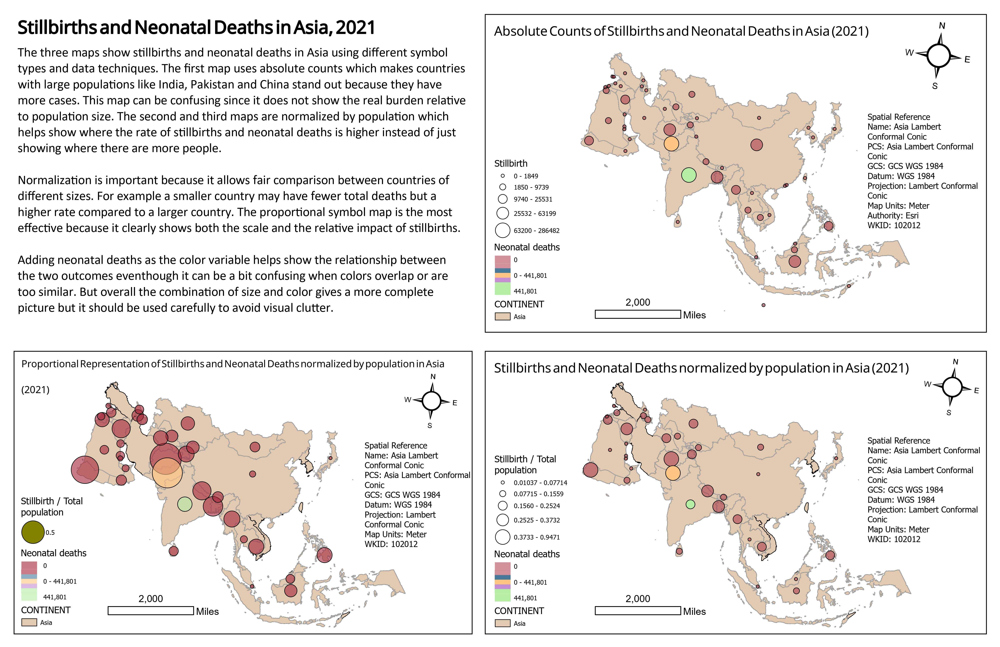

Layout A
View full map →Global distribution of stillbirths and population

I created this map series to compare different ways of visualizing public health data. The layouts show stillbirths, neonatal deaths, and population using dot density, graduated symbols, proportional symbols, and normalization by population.


The purpose of this project was to compare different cartographic methods for showing public health data. I used stillbirths as the main count variable and neonatal deaths as a related health indicator. I also used total population because population size strongly affects how count data appears on a map.
The main idea was to show that the same health topic can look very different depending on the map method. Absolute counts, dot density, graduated symbols, proportional symbols, and normalized rates each communicate a different part of the story.
I worked with State of the World's Children statistical data and Natural Earth country boundaries. The tabular data had to be prepared carefully before mapping. I selected the variables, cleaned the values, formatted the fields as numbers, and joined the table to the Natural Earth country layer using country codes.
After joining the data, I copied the joined layer into the geodatabase so I could reuse it for multiple maps. This helped keep the workflow organized because the project required more than one layout and multiple symbology methods.
The first layout uses a dot density method to show the global distribution of stillbirths and population. Each dot represents a fixed number of people or stillbirths, so the map gives a quick visual impression of where the highest concentrations are located.
This method is useful because it makes broad global patterns visible. South Asia and parts of Africa stand out because they have both large populations and high stillbirth counts. However, dot density can also be misleading because dots are placed randomly within country boundaries. They may appear in deserts, mountains, or other places where people do not actually live.
The second layout focuses on Asia and compares three different symbol approaches. The first map uses absolute counts, which makes countries with large populations, such as India, Pakistan, and China, stand out. This is useful for showing total scale, but it does not show the burden relative to population size.
The second and third maps normalize stillbirths by total population. This makes the comparison fairer because countries with smaller populations can still show high rates. Normalization is important because a country can have fewer total cases but still have a higher rate compared with a larger country.
For the dot density map, I used dots to show population and stillbirth counts. I used different colors and transparency so the viewer could see where the two variables overlap. This helped communicate the relationship between population distribution and stillbirth totals.
For the graduated and proportional symbol maps, I used circle size to show stillbirths and color to show neonatal deaths. Size is useful for showing magnitude, while color helps compare a related health outcome. I adjusted transparency because large overlapping circles can quickly make the map hard to read.
I used muted country colors so the countries acted as the ground and the health symbols stood out as the main figure. This figure-ground relationship was important because the viewer should focus on the health data, not the base map. The map symbols were made brighter and more prominent to create a clear visual hierarchy.
Contrast was also important for separating variables. I used different colors, circle sizes, and transparency settings to show overlapping values without losing readability. The goal was to make the maps informative while avoiding too much visual clutter.
The maps show that countries with large populations naturally have higher absolute counts of stillbirths and neonatal deaths. This is why countries such as India, Pakistan, and China stand out in the absolute count map. However, this does not automatically mean those countries have the highest burden relative to population size.
The normalized maps provide a more balanced comparison because they show stillbirths relative to population. These maps help identify where rates may be higher, not only where there are more people. This difference between total count and normalized rate is one of the most important lessons from the map series.
This project helped me understand that map symbols are not neutral. The choice between dots, graduated symbols, proportional symbols, and normalized values can change how the reader understands the data. A map of total counts can be useful, but it can also overemphasize large population countries.
I also learned that adding a second variable with color can make the map richer, but it can also add visual noise if the colors overlap or the symbols are too similar. The proportional symbol map was the most effective for showing both scale and relative impact, but it still needed careful transparency and legend design to stay readable.